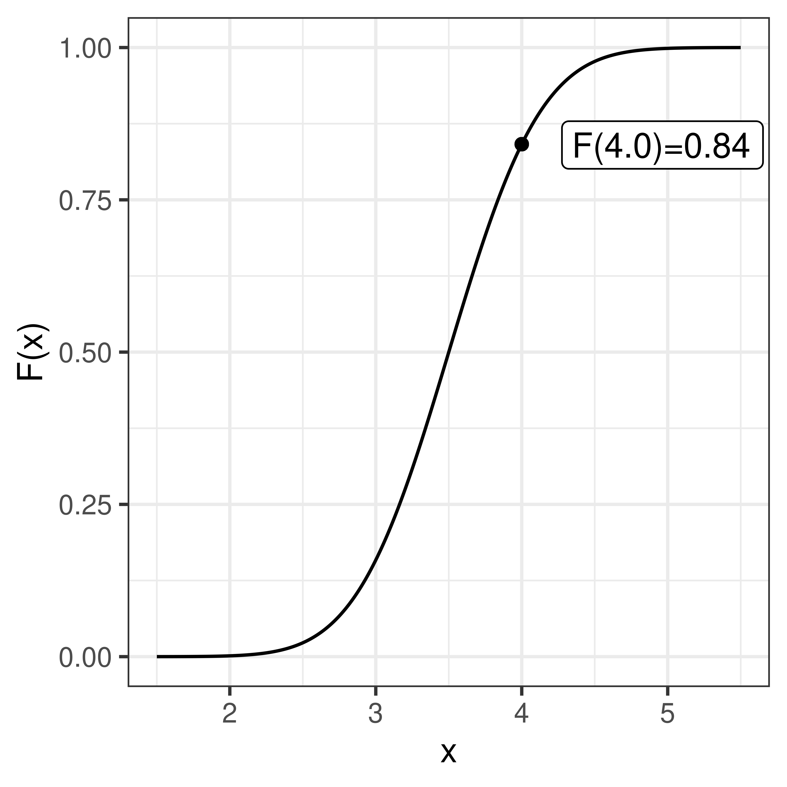

3 Continuous random variable
A continuous random number is not limited to discrete values, but any continuous number within one or several ranges is possible.
Examples: weight, height, speed, intensity, …
A continuous random variable can be described by its probability density function, pdf.
The probability density function, \(f(x)\), is defined such that the total area under the curve is 1.
\[ \int_{-\infty}^{\infty} f(x) dx = 1 \]


The area under the curve from a to b is the probability that the random variable \(X\) takes a value between a and b.
\(P(a \leq X \leq b) = \int_a^b f(x) dx\)
The cumulative distribution function, cdf, sometimes called just the distribution function, \(F(x)\), is defined as:
\[F(x) = P(X \leq x) = \int_{-\infty}^x f(t) dt\]

\[P(X \leq x) = F(x)\]
As we know that the total probability (over all x) is 1, we can conclude that
\[P(X > x) = 1 - F(x)\] and thus
\[P(a < X \leq b) = F(b) - F(a)\]
## Parametric continuous distributions
Two important parameters of a distribution is the expected value, \(\mu\), that describe the distributions location and the variance, \(\sigma^2\), that describe the spread.
The expected value, or population mean, is defined as;
\[E[X] = \mu = \int_{-\infty}^\infty x f(x) dx\] We will learn more about the expected value and how to estimate a population mean from a sample later in the course.
The variance is defined as the expected value of the squared distance from the population mean;
\[\sigma^2 = E[(X-\mu)^2] = \int_{-\infty}^\infty (x-\mu)^2 f(x) dx\]
The square root of the variance is called the standard deviation, \(\sigma\).
3.1 Normal distribution
The normal distribution (sometimes referred to as the Gaussian distribution) is a common probability distribution and many continuous random variables can be described by the normal distribution or be approximated by the normal distribution.
The normal probability density function
\[f(x) = \frac{1}{\sqrt{2 \pi} \sigma} e^{-\frac{1}{2} \left(\frac{x-\mu}{\sigma}\right)^2}\]
describes the distribution of a normal random variable, \(X\), with expected value \(\mu\) and standard deviation \(\sigma\), \(e\) and \(\pi\) are two common mathematical constants, \(e \approx 2.71828\) and \(\pi \approx 3.14159\).
In short we write \(X \sim N(\mu, \sigma)\).

The bell-shaped normal distributions is symmetric around \(\mu\) and \(f(x) \rightarrow 0\) as \(x \rightarrow \infty\) and as \(x \rightarrow -\infty\).
As \(f(x)\) is well defined, values for the cumulative distribution function \(F(x) = \int_{- \infty}^x f(x) dx\) can be computed.
If \(X\) is normally distributed with expected value \(\mu\) and standard deviation \(\sigma\) we write:
\[X \sim N(\mu, \sigma)\]
Using transformation rules we can define
\[Z = \frac{X-\mu}{\sigma}, \, Z \sim N(0,1)\]
Values for the cumulative standard normal distribution, \(F(z)\), are tabulated and easy to compute in R using the function pnorm.
| 0 | 0.01 | 0.02 | 0.03 | 0.04 | 0.05 | 0.06 | 0.07 | 0.08 | 0.09 | |
|---|---|---|---|---|---|---|---|---|---|---|
| 0.0 | 0.5000 | 0.5040 | 0.5080 | 0.5120 | 0.5160 | 0.5199 | 0.5239 | 0.5279 | 0.5319 | 0.5359 |
| 0.1 | 0.5398 | 0.5438 | 0.5478 | 0.5517 | 0.5557 | 0.5596 | 0.5636 | 0.5675 | 0.5714 | 0.5753 |
| 0.2 | 0.5793 | 0.5832 | 0.5871 | 0.5910 | 0.5948 | 0.5987 | 0.6026 | 0.6064 | 0.6103 | 0.6141 |
| 0.3 | 0.6179 | 0.6217 | 0.6255 | 0.6293 | 0.6331 | 0.6368 | 0.6406 | 0.6443 | 0.6480 | 0.6517 |
| 0.4 | 0.6554 | 0.6591 | 0.6628 | 0.6664 | 0.6700 | 0.6736 | 0.6772 | 0.6808 | 0.6844 | 0.6879 |
| 0.5 | 0.6915 | 0.6950 | 0.6985 | 0.7019 | 0.7054 | 0.7088 | 0.7123 | 0.7157 | 0.7190 | 0.7224 |
| 0.6 | 0.7257 | 0.7291 | 0.7324 | 0.7357 | 0.7389 | 0.7422 | 0.7454 | 0.7486 | 0.7517 | 0.7549 |
| 0.7 | 0.7580 | 0.7611 | 0.7642 | 0.7673 | 0.7704 | 0.7734 | 0.7764 | 0.7794 | 0.7823 | 0.7852 |
| 0.8 | 0.7881 | 0.7910 | 0.7939 | 0.7967 | 0.7995 | 0.8023 | 0.8051 | 0.8078 | 0.8106 | 0.8133 |
| 0.9 | 0.8159 | 0.8186 | 0.8212 | 0.8238 | 0.8264 | 0.8289 | 0.8315 | 0.8340 | 0.8365 | 0.8389 |
| 1.0 | 0.8413 | 0.8438 | 0.8461 | 0.8485 | 0.8508 | 0.8531 | 0.8554 | 0.8577 | 0.8599 | 0.8621 |
| 1.1 | 0.8643 | 0.8665 | 0.8686 | 0.8708 | 0.8729 | 0.8749 | 0.8770 | 0.8790 | 0.8810 | 0.8830 |
| 1.2 | 0.8849 | 0.8869 | 0.8888 | 0.8907 | 0.8925 | 0.8944 | 0.8962 | 0.8980 | 0.8997 | 0.9015 |
| 1.3 | 0.9032 | 0.9049 | 0.9066 | 0.9082 | 0.9099 | 0.9115 | 0.9131 | 0.9147 | 0.9162 | 0.9177 |
| 1.4 | 0.9192 | 0.9207 | 0.9222 | 0.9236 | 0.9251 | 0.9265 | 0.9279 | 0.9292 | 0.9306 | 0.9319 |
| 1.5 | 0.9332 | 0.9345 | 0.9357 | 0.9370 | 0.9382 | 0.9394 | 0.9406 | 0.9418 | 0.9429 | 0.9441 |
| 1.6 | 0.9452 | 0.9463 | 0.9474 | 0.9484 | 0.9495 | 0.9505 | 0.9515 | 0.9525 | 0.9535 | 0.9545 |
| 1.7 | 0.9554 | 0.9564 | 0.9573 | 0.9582 | 0.9591 | 0.9599 | 0.9608 | 0.9616 | 0.9625 | 0.9633 |
| 1.8 | 0.9641 | 0.9649 | 0.9656 | 0.9664 | 0.9671 | 0.9678 | 0.9686 | 0.9693 | 0.9699 | 0.9706 |
| 1.9 | 0.9713 | 0.9719 | 0.9726 | 0.9732 | 0.9738 | 0.9744 | 0.9750 | 0.9756 | 0.9761 | 0.9767 |
| 2.0 | 0.9772 | 0.9778 | 0.9783 | 0.9788 | 0.9793 | 0.9798 | 0.9803 | 0.9808 | 0.9812 | 0.9817 |
| 2.1 | 0.9821 | 0.9826 | 0.9830 | 0.9834 | 0.9838 | 0.9842 | 0.9846 | 0.9850 | 0.9854 | 0.9857 |
| 2.2 | 0.9861 | 0.9864 | 0.9868 | 0.9871 | 0.9875 | 0.9878 | 0.9881 | 0.9884 | 0.9887 | 0.9890 |
| 2.3 | 0.9893 | 0.9896 | 0.9898 | 0.9901 | 0.9904 | 0.9906 | 0.9909 | 0.9911 | 0.9913 | 0.9916 |
| 2.4 | 0.9918 | 0.9920 | 0.9922 | 0.9925 | 0.9927 | 0.9929 | 0.9931 | 0.9932 | 0.9934 | 0.9936 |
| 2.5 | 0.9938 | 0.9940 | 0.9941 | 0.9943 | 0.9945 | 0.9946 | 0.9948 | 0.9949 | 0.9951 | 0.9952 |
| 2.6 | 0.9953 | 0.9955 | 0.9956 | 0.9957 | 0.9959 | 0.9960 | 0.9961 | 0.9962 | 0.9963 | 0.9964 |
| 2.7 | 0.9965 | 0.9966 | 0.9967 | 0.9968 | 0.9969 | 0.9970 | 0.9971 | 0.9972 | 0.9973 | 0.9974 |
| 2.8 | 0.9974 | 0.9975 | 0.9976 | 0.9977 | 0.9977 | 0.9978 | 0.9979 | 0.9979 | 0.9980 | 0.9981 |
| 2.9 | 0.9981 | 0.9982 | 0.9982 | 0.9983 | 0.9984 | 0.9984 | 0.9985 | 0.9985 | 0.9986 | 0.9986 |
| 3.0 | 0.9987 | 0.9987 | 0.9987 | 0.9988 | 0.9988 | 0.9989 | 0.9989 | 0.9989 | 0.9990 | 0.9990 |
| 3.1 | 0.9990 | 0.9991 | 0.9991 | 0.9991 | 0.9992 | 0.9992 | 0.9992 | 0.9992 | 0.9993 | 0.9993 |
| 3.2 | 0.9993 | 0.9993 | 0.9994 | 0.9994 | 0.9994 | 0.9994 | 0.9994 | 0.9995 | 0.9995 | 0.9995 |
| 3.3 | 0.9995 | 0.9995 | 0.9995 | 0.9996 | 0.9996 | 0.9996 | 0.9996 | 0.9996 | 0.9996 | 0.9997 |
| 3.4 | 0.9997 | 0.9997 | 0.9997 | 0.9997 | 0.9997 | 0.9997 | 0.9997 | 0.9997 | 0.9997 | 0.9998 |
Some value of particular interest:
\[F(1.64) = 0.95\\ F(1.96) = 0.975\]
As the normal distribution is symmetric F(-z) = 1 - F(z)
\[F(-1.64) = 0.05\\ F(-1.96) = 0.025\]
\[P(-1.96 < Z < 1.96) = 0.95\]
### Sum of two normal random variables
If \(X \sim N(\mu_1, \sigma_1)\) and \(Y \sim N(\mu_2, \sigma_2)\) are two independent normal random variables, then their sum is also a random variable:
\[X + Y \sim N(\mu_1 + \mu_2, \sqrt{\sigma_1^2 + \sigma_2^2})\]
and
\[X - Y \sim N(\mu_1 - \mu_2, \sqrt{\sigma_1^2 + \sigma_2^2})\] This can be extended to the case with \(n\) independent and identically distributed random varibles \(X_i\) (\(i=1 \dots n\)). If all \(X_i\) are normally distributed with mean \(\mu\) and standard deviation \(\sigma\), \(X_i \in N(\mu, \sigma)\), then the sum of all \(n\) random variables will also be normally distributed with mean \(n\mu\) and standard deviation \(\sqrt{n} \sigma\).
3.2 Central limit theorem
The sum of $n$ independent and equally distributed random variables
is normally distributed, if $n$ is large enough.As a result of central limit theorem, the distribution of fractions or mean values of a sample follow the normal distribution, at least if the sample is large enough (a rule of thumb is that the sample size \(n>30\)).
::: {#exm-BMIdistr} # Mean BMI
In a population of 252 men we can study the distribution of BMI.
Warning: `stat(density)` was deprecated in ggplot2 3.4.0.
ℹ Please use `after_stat(density)` instead.
##Population mean
(mu <- mean(fat$BMI))[1] 25##Population variance
(sigma2 <- var(fat$BMI)/nrow(fat)*(nrow(fat)-1))[1] 13##Population standard variance
(sigma <- sqrt(sigma2))[1] 3.6Randomly sample 3, 5, 10, 15, 20, 30 men and compute the mean value, \(m\). Repeat many times to get the distribution of mean values.

Note, mean is just the sum divided by the number of samples \(n\).
:::
3.3 \(\chi^2\)-distribution
The random variable \(Y = \sum_{i=1}^n X_i^2\) is \(\chi^2\) distributed with \(n-1\) degrees of freedom, if \(X_i\) are independent identically distributed random variables \(X_i \in N(0,1)\).
In short \(Y \in \chi^2(n-1)\).

3.4 F-distribution
The ratio of two \(\chi^2\)-distributed variables divided by their degrees of freedom is F-distributed

The ratio of two sample variances is F-distributed3.5 t-distribution
The ratio of a normally distributed variable and a \(\chi^2\)-distributed variable is t-distributed.

**t-distribution**
The ratio between sample mean and sample variance is t-distributed.3.6 Distributions in R
Probability density functions for the normal, t, \(\chi^2\) and F distributions can in R can be computed using functions dnorm, dt, dchisq, and df, respectively.
Cumulative distribution functions can be computed using pnorm, pt, pchisq and pf.
Also, functions for computing an \(x\) such that \(P(X<x) = q\), where \(q\) is a probability of interest are available using qnorm, qt, qchisq and qf.